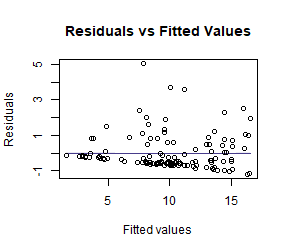
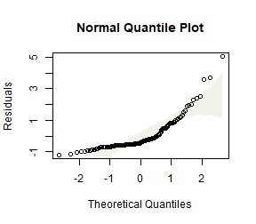
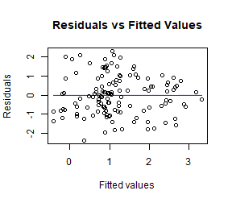
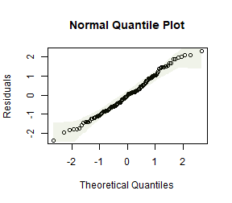
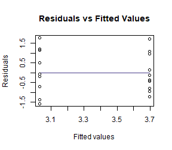
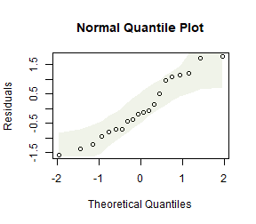
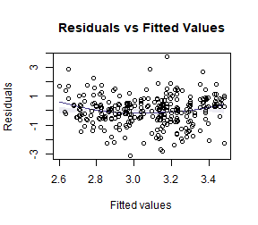
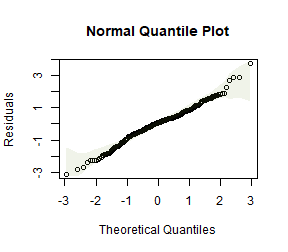

Chapter 9 -- Design-based inference -- Exercise solutions and Code Boxes
David Warton
2022-08-24
Chapter9Solutions.RmdExercise 9.1: Smoking in pregnancy
Consider again the guinea pig experiment… How can we make inferences about the treatment effect, without assuming normality?
Design-based inference allows us to relax distributional assumptions. Specifically, if we use a permutation test as in Code Box 9.1, or a bootstrap test as in Code Box 9.3, we do not assume normality.
Exercise 9.2: Three example permutations of treatment labels in the guinea pig data
Does the observed statistic of 2.67 seem large compared to these values? What does this tell you?
The three statistics obtained by permuting data were 0.76, -2.09 and -1.08. These are all smaller than 2.67, suggesting that 2.67 is unusually large compared to what we would expect if there were no treatment effect. However, to say something more precise about how unusual this is we should do many more permutations…
Code behind Figure 9.1
library(ecostats)
data(guineapig)
ft_guinea = lm(errors~treatment,data=guineapig)
tObs = summary(ft_guinea)$coef[2,3] #store observed t-statistic
nPerm = 1000
tStats = rep(NA,nPerm)
tStats[1] = tObs
for(iPerm in 2:nPerm)
{
guineapig$treatPerm = sample(guineapig$treatment) #permute treatment labels
ft_guineaPerm = lm(errors~treatPerm,data=guineapig) #re-fit model
tStats[iPerm] = summary(ft_guineaPerm)$coef[2,3] #store t-stat
}
par(cex=1.2,lwd=1.5)
hist(tStats,main="Null distribution of t under permutation",xlab="t")
abline(v=tObs,col="red") #put a red line on plot for observed t-statplot of chunk fig91
Code Box 9.1: A permutation test for the guinea pig data using mvabund
library(mvabund)
data(guineapig)
ft_guinea = manylm(errors~treatment,data=guineapig)
anova(ft_guinea)
#> Analysis of Variance Table
#>
#> Model: manylm(formula = errors ~ treatment, data = guineapig)
#>
#> Overall test for all response variables
#> Test statistics:
#> Res.Df Df.diff val(F) Pr(>F)
#> (Intercept) 19
#> treatment 18 1 7.134 0.016 *
#> ---
#> Signif. codes: 0 '***' 0.001 '**' 0.01 '*' 0.05 '.' 0.1 ' ' 1
#> Arguments: P-value calculated using 999 iterations via residual (without replacement) resampling.Code Box 9.2: Permutation test for a relationship between latitude and plant height
data(globalPlants)
ft_height = manylm(height~lat, data=globalPlants)
anova(ft_height)
#> Analysis of Variance Table
#>
#> Model: manylm(formula = height ~ lat, data = globalPlants)
#>
#> Overall test for all response variables
#> Test statistics:
#> Res.Df Df.diff val(F) Pr(>F)
#> (Intercept) 130
#> lat 129 1 9.271 0.007 **
#> ---
#> Signif. codes: 0 '***' 0.001 '**' 0.01 '*' 0.05 '.' 0.1 ' ' 1
#> Arguments: P-value calculated using 999 iterations via residual (without replacement) resampling.Code Box 9.3: Using the mvabund package for a bootstrap test of guinea pig data
library(mvabund)
ft_guinea = manylm(errors~treatment, data=guineapig)
anova(ft_guinea, resamp="residual")
#> Analysis of Variance Table
#>
#> Model: manylm(formula = errors ~ treatment, data = guineapig)
#>
#> Overall test for all response variables
#> Test statistics:
#> Res.Df Df.diff val(F) Pr(>F)
#> (Intercept) 19
#> treatment 18 1 7.134 0.013 *
#> ---
#> Signif. codes: 0 '***' 0.001 '**' 0.01 '*' 0.05 '.' 0.1 ' ' 1
#> Arguments: P-value calculated using 999 iterations via residual resampling.Exercise 9.3: Case resampling in the guinea pig data
We can… resample cases… Below are three examples.
C N N N C N N C N N C C N N C C N N N N 10 33 28 33 47 66 33 26 63 66 36 20 38 28 35 15 66 33 43 26
N N N N C N N N N N C C C C N C C C N C 33 89 34 89 35 43 38 33 23 63 10 26 11 10 43 47 10 19 66 35
N N C C N N N C N C N C N N N C C C C C 66 66 19 47 63 43 43 20 33 15 28 26 89 38 43 47 20 20 11 20
Count the number of Controls in each case resampled dataset. Did you get the number you expected to?
OK so the first one has 8 Control sites, second one has 9 Control sites, third has 10 Control sites. This is not expected in the sense that the original study was planned with 10 Control and 10 Treatment guinea pigs, so we have messed with the design by doing case resampling :(
Exercise 9.4: Global plant height – does rainfall explain latitude effect?
She wants to know: Does latitude explain any variation in plant height beyond that due to rainfall?
What is the model that should be fitted under the null hypothesis? Does it include any predictor variables?
The model under the null hypothesis, as in Code Box, includes rainfall:
ft_heightR=lm(height~rain, data=globalPlants)and we want to see if there is significant additional variation in plant height that is explained by latitude, beyond that explained by rainfall.
Code Box 9.4: Residual resampling using mvabund for Exercise 9.4.
ft_heightRL=manylm(height~rain+lat, data=globalPlants)
anova(ft_heightRL, resamp="perm.resid")
#> Analysis of Variance Table
#>
#> Model: manylm(formula = height ~ rain + lat, data = globalPlants)
#>
#> Overall test for all response variables
#> Test statistics:
#> Res.Df Df.diff val(F) Pr(>F)
#> (Intercept) 130
#> rain 129 1 20.983 0.002 **
#> lat 128 1 0.429 0.515
#> ---
#> Signif. codes: 0 '***' 0.001 '**' 0.01 '*' 0.05 '.' 0.1 ' ' 1
#> Arguments: P-value calculated using 999 iterations via residual (without replacement) resampling.Code Box 9.5: Plant height data – checking assumptions
ft_heightRLlm = lm(height~lat, data=globalPlants)
plotenvelope(ft_heightRLlm, n.sim=99)
(Note that plotenvelope was run on just 99 iterations to save on compilation time)
Exercise 9.5: Plant height data – log transformation
Refit the linear model to the plant height data, available as the globalPlants dataset in the ecostats package, using a log-transformation of the response. Use residual resampling to test for an effect of latitude after controlling for the effect of rainfall.
globalPlants$loght = log(globalPlants$height)
ft_loghtRL=manylm(loght~rain+lat, data=globalPlants)
anova(ft_loghtRL, resamp="perm.resid")
#> Analysis of Variance Table
#>
#> Model: manylm(formula = loght ~ rain + lat, data = globalPlants)
#>
#> Overall test for all response variables
#> Test statistics:
#> Res.Df Df.diff val(F) Pr(>F)
#> (Intercept) 130
#> rain 129 1 32.01 0.002 **
#> lat 128 1 9.62 0.002 **
#> ---
#> Signif. codes: 0 '***' 0.001 '**' 0.01 '*' 0.05 '.' 0.1 ' ' 1
#> Arguments: P-value calculated using 999 iterations via residual (without replacement) resampling.
ft_loghtRLlm = lm(loght~rain+lat, data=globalPlants)
plotenvelope(ft_loghtRLlm, n.sim=99)
How do results compare to the analysis without a log-transformation?
Now the test statistics are larger and more significant (which I guess because we can better see the signal in data when we are closer to satisfying our assumptions).
How do results compare to what you would have got if you used model-based inference, by applying anova to the lm function? Is this what you expected?
anova(ft_loghtRLlm)
#> Analysis of Variance Table
#>
#> Response: loght
#> Df Sum Sq Mean Sq F value Pr(>F)
#> rain 1 70.761 70.761 34.1497 3.989e-08 ***
#> lat 1 19.934 19.934 9.6203 0.002368 **
#> Residuals 128 265.226 2.072
#> ---
#> Signif. codes: 0 '***' 0.001 '**' 0.01 '*' 0.05 '.' 0.1 ' ' 1Results are nearly identical, which is as expected, because there weren’t any violations of distributional assumptions that might have warranted resampling.
Exercise 9.6: Guinea pig data – log transformation
Log-transform number of errors and check assumptions. Does this better satisfy assumptions than the model on untransformed data?
data(guineapig)
guineapig$logErrors = log(guineapig$errors)
ft_guineaLog = lm(logErrors~treatment,data=guineapig)
plotenvelope(ft_guineaLog, n.sim=99)
by(guineapig$logErrors,guineapig$treatment,sd)
#> guineapig$treatment: C
#> [1] 0.521912
#> ----------------------------------------------------------------------
#> guineapig$treatment: N
#> [1] 0.445521This looks a lot better. Standard deviations are similar now, no obvious non-normal trend on quantile plot.
Repeat the permutation test of Code Box 9.2 on log-transformed data.
library(mvabund)
ftMany_guineaLog = manylm(logErrors~treatment,data=guineapig)
anova(ftMany_guineaLog)
#> Analysis of Variance Table
#>
#> Model: manylm(formula = logErrors ~ treatment, data = guineapig)
#>
#> Overall test for all response variables
#> Test statistics:
#> Res.Df Df.diff val(F) Pr(>F)
#> (Intercept) 19
#> treatment 18 1 9.434 0.006 **
#> ---
#> Signif. codes: 0 '***' 0.001 '**' 0.01 '*' 0.05 '.' 0.1 ' ' 1
#> Arguments: P-value calculated using 999 iterations via residual (without replacement) resampling.How do results compare to the analysis without a log-transformation? Is this what you expected to happen?
Results are similar, but the test statistic is slightly larger and slightly more significant. This is expected because by fitting a model for the data that is closer to satisfying assumptions, it will work better and more clearly see any signal in the data.
Exercise 9.7: Revisiting linear models past
Go back to a couple of linear models (with fixed effects terms only) you have previously fitted, e.g. in the exercises of Chapter 4, and reanalyse using (residual) resampling for inference.
Repeating Exercise 4.9:
data(snowmelt)
snowmelt$logFlow = log(snowmelt$flow)
snowmelt$logFlow[snowmelt$logFlow==-Inf]=NA
snowReduced = na.omit(snowmelt[,c("logFlow","snow","elev")]) #this line not normally needed, lm can handle NA's, but seems needed because of a weird conflict with MCMCglmm code in Chapter 11 solutions
ft_logsnow = lm(logFlow~elev+snow, data=snowReduced)
plotenvelope(ft_logsnow, n.sim=99)
summary(ft_logsnow)
#>
#> Call:
#> lm(formula = logFlow ~ elev + snow, data = snowReduced)
#>
#> Residuals:
#> Min 1Q Median 3Q Max
#> -0.90161 -0.15794 0.02338 0.15834 1.08662
#>
#> Coefficients:
#> Estimate Std. Error t value Pr(>|t|)
#> (Intercept) 3.8805208 0.3193019 12.153 < 2e-16 ***
#> elev 0.0003357 0.0001226 2.739 0.00651 **
#> snow -0.0103172 0.0007551 -13.663 < 2e-16 ***
#> ---
#> Signif. codes: 0 '***' 0.001 '**' 0.01 '*' 0.05 '.' 0.1 ' ' 1
#>
#> Residual standard error: 0.2909 on 316 degrees of freedom
#> Multiple R-squared: 0.3774, Adjusted R-squared: 0.3735
#> F-statistic: 95.78 on 2 and 316 DF, p-value: < 2.2e-16
confint(ft_logsnow)
#> 2.5 % 97.5 %
#> (Intercept) 3.252294e+00 4.5087472418
#> elev 9.457986e-05 0.0005768232
#> snow -1.180299e-02 -0.0088315037Repeating using resampling:
library(mvabund)
mft_logsnow = manylm(logFlow~elev+snow, data=snowReduced)
summary(mft_logsnow)
#>
#> Test statistics:
#> F value Pr(>F)
#> (Intercept) 147.699 0.001 ***
#> elev 7.503 0.007 **
#> snow 186.668 0.001 ***
#> ---
#> Signif. codes: 0 '***' 0.001 '**' 0.01 '*' 0.05 '.' 0.1 ' ' 1
#> Arguments: with 999 resampling iterations using residual resampling and response assumed to be uncorrelated
#>
#> Hooper's R-squared: 0.3774
#>
#> Lawley-Hotelling trace statistic: 95.78, p-value: 0.001
#> Arguments: with 999 resampling iterations using residual resampling and response assumed to be uncorrelated
confint(mft_logsnow)
#> 2.5 % 97.5 %
#> logFlow:(Intercept) 3.252294e+00 4.5087472418
#> logFlow:elev 9.457986e-05 0.0005768232
#> logFlow:snow -1.180299e-02 -0.0088315037Did results work out differently? Is this what you expected? (Think about sample size and the normality assumption.)
P-values are pretty much the same, which is expected, because we didn’t have concerns about normality and the sample size was big enough for CLT to deal with such concerns anyway.
The confidence intervals are identical, because they are computed in the same way irrespective of resampling.
Now repeating Exercise 4.10:
data(aphidsBACI)
lm_aphids = lm(logcount~Plot+Time+Treatment:Time,data=aphidsBACI)
anova(lm_aphids)
#> Analysis of Variance Table
#>
#> Response: logcount
#> Df Sum Sq Mean Sq F value Pr(>F)
#> Plot 7 0.8986 0.1284 0.4603 0.833357
#> Time 1 5.4675 5.4675 19.6038 0.004434 **
#> Time:Treatment 1 0.7397 0.7397 2.6522 0.154527
#> Residuals 6 1.6734 0.2789
#> ---
#> Signif. codes: 0 '***' 0.001 '**' 0.01 '*' 0.05 '.' 0.1 ' ' 1
mlm_aphids = manylm(logcount~Plot+Time+Treatment:Time,data=aphidsBACI)
anova(mlm_aphids)
#> Analysis of Variance Table
#>
#> Model: manylm(formula = logcount ~ Plot + Time + Treatment:Time, data = aphidsBACI)
#>
#> Overall test for all response variables
#> Test statistics:
#> Res.Df Df.diff val(F) Pr(>F)
#> (Intercept) 15
#> Plot 8 7 0.130 0.989
#> Time 7 1 15.860 0.010 **
#> Time:Treatment 6 2 1.105 0.166
#> ---
#> Signif. codes: 0 '***' 0.001 '**' 0.01 '*' 0.05 '.' 0.1 ' ' 1
#> Arguments: P-value calculated using 999 iterations via residual (without replacement) resampling.This looks fairly similar, the test statistic is a bit different (but equivalent) and significance levels generally similar. There is slightly more movement in P-values than last time, which may be related to the sample size being smaller (in fact the residual degrees of freedom is only 6.)
Code Box 9.6: Block resampling using mvabund for estuary data
data(estuaries)
ft_estLM = manylm(Total~Mod,data=estuaries)
anova(ft_estLM,resamp="case",block=estuaries$Estuary)
#> Using block resampling...
#> Analysis of Variance Table
#>
#> Model: manylm(formula = Total ~ Mod, data = estuaries)
#>
#> Overall test for all response variables
#> Test statistics:
#> Res.Df Df.diff val(F) Pr(>F)
#> (Intercept) 41
#> Mod 40 1 9.916 0.454
#> Arguments: P-value calculated using 999 iterations via case block resampling.Code Box 9.7: Block resampling using permute for raven data
data(ravens)
crowGun = ravens[ravens$treatment == 1,]
library(reshape2)
crowLong = melt(crowGun,measure.vars = c("Before","After"),
variable.name="time",value.name="ravens")
library(permute)
CTRL = how(blocks=crowLong$site)
permIDs = shuffleSet(24,nset=999,control=CTRL)
#> Set of permutations < 'minperm'. Generating entire set.
ravenlm = manylm(ravens~site+time,data=crowLong)
anova(ravenlm,bootID=permIDs)
#> Using <int> bootID matrix from input.
#> Analysis of Variance Table
#>
#> Model: manylm(formula = ravens ~ site + time, data = crowLong)
#>
#> Overall test for all response variables
#> Test statistics:
#> Res.Df Df.diff val(F) Pr(>F)
#> (Intercept) 23
#> site 12 11 3.27 0.991
#> time 11 1 6.76 0.021 *
#> ---
#> Signif. codes: 0 '***' 0.001 '**' 0.01 '*' 0.05 '.' 0.1 ' ' 1
#> Arguments: P-value calculated using 999 iterations via residual (without replacement) resampling.How do results compare to what we got previously (Code Box 4.2), using model-based inference?
ravenlm = lm(ravens~site+time,data=crowLong)
anova(ravenlm)
#> Analysis of Variance Table
#>
#> Response: ravens
#> Df Sum Sq Mean Sq F value Pr(>F)
#> site 11 55.458 5.0417 4.84 0.007294 **
#> time 1 7.042 7.0417 6.76 0.024694 *
#> Residuals 11 11.458 1.0417
#> ---
#> Signif. codes: 0 '***' 0.001 '**' 0.01 '*' 0.05 '.' 0.1 ' ' 1We are getting almost the same P-value for the time effect. Interestingly, we get a very different P-value for the site effect. This is because the resampling strategy we used permuted data within sites but did not permute data across sites – this does not give a valid test for a site effect, hence the site P-value from the permutation test is not valid.
Code Box 9.8: Moving block bootstrap test for species richness modelling
data(Myrtaceae)
# fit a lm:
Myrtaceae$logrich=log(Myrtaceae$richness+1)
mft_richAdd = manylm(logrich~soil+poly(TMP_MAX,degree=2)+
poly(TMP_MIN,degree=2)+poly(RAIN_ANN,degree=2),
data=Myrtaceae)
# construct a boot ID matrix:
BootID = BlockBootID(x = Myrtaceae$X, y = Myrtaceae$Y, block_L = 20,
nBoot = 99, Grid_space = 5)
anova(mft_richAdd,resamp="case",bootID=BootID)
#> Using <int> bootID matrix from input.
#> Analysis of Variance Table
#>
#> Model: manylm(formula = logrich ~ soil + poly(TMP_MAX, degree = 2) +
#> Model: poly(TMP_MIN, degree = 2) + poly(RAIN_ANN, degree = 2), data = Myrtaceae)
#>
#> Overall test for all response variables
#> Test statistics:
#> Res.Df Df.diff val(F) Pr(>F)
#> (Intercept) 999
#> soil 991 8 11.971 0.63
#> poly(TMP_MAX, degree = 2) 989 2 18.244 0.01 **
#> poly(TMP_MIN, degree = 2) 987 2 17.533 0.46
#> poly(RAIN_ANN, degree = 2) 985 2 8.208 0.99
#> ---
#> Signif. codes: 0 '***' 0.001 '**' 0.01 '*' 0.05 '.' 0.1 ' ' 1
#> Arguments: P-value calculated using 99 iterations via case resampling.(Note that BlockBootID was set to only generate 99 bootstrap samples to save on compilation time, but you should use more in practice.)
How does this compare to what you would get if you just used model-based inference, using the lm function?
ft_richAdd = lm(logrich~soil+poly(TMP_MAX,degree=2)+
poly(TMP_MIN,degree=2)+poly(RAIN_ANN,degree=2),
data=Myrtaceae)
anova(ft_richAdd)
#> Analysis of Variance Table
#>
#> Response: logrich
#> Df Sum Sq Mean Sq F value Pr(>F)
#> soil 8 15.075 1.88438 12.9887 < 2.2e-16 ***
#> poly(TMP_MAX, degree = 2) 2 5.551 2.77533 19.1299 7.068e-09 ***
#> poly(TMP_MIN, degree = 2) 2 5.162 2.58082 17.7892 2.573e-08 ***
#> poly(RAIN_ANN, degree = 2) 2 2.382 1.19081 8.2081 0.0002915 ***
#> Residuals 985 142.902 0.14508
#> ---
#> Signif. codes: 0 '***' 0.001 '**' 0.01 '*' 0.05 '.' 0.1 ' ' 1Everything is highly significant here, but much less so when using the moving block bootstrap. This is probably partly because the data are spatially autocorrelated, so we are seeing false significance in the lm results because dependence of observations hasn’t been accounted for. But the difference in results is quite extreme (when considering that the spatial signal wasn’t super-strong) so the moving block bootstrap maybe is being overly conservative here too.
Code Box 9.9: Moving block bootstrap standard errors for species richness predictions
ft_richAdd = lm(logrich~soil+poly(TMP_MAX,degree=2)+
poly(TMP_MIN,degree=2)+poly(RAIN_ANN,degree=2),
data=Myrtaceae)
nBoot=nrow(BootID)
predMat = matrix(NA,length(Myrtaceae$logrich),nBoot)
for(iBoot in 1:nBoot)
{
ids = BootID[iBoot,]
ft_i = update(ft_richAdd,data=Myrtaceae[ids,])
predMat[ids,iBoot] = predict(ft_i)
}
bootSEs = apply(predMat,1,sd,na.rm=TRUE)
lmSEs = predict(ft_richAdd,se.fit=TRUE)$se.fit
cbind(bootSEs,lmSEs)[1:10,]
#> bootSEs lmSEs
#> [1,] 0.04082675 0.02982530
#> [2,] 0.03986889 0.02396074
#> [3,] 0.04403786 0.02853756
#> [4,] 0.05468778 0.03348368
#> [5,] 0.06589231 0.06279115
#> [6,] 0.03676736 0.03413518
#> [7,] 0.05445444 0.02808283
#> [8,] 0.07245802 0.08272950
#> [9,] 0.03751627 0.02759009
#> [10,] 0.05979565 0.06622908Is this what you expected to see?
The bootstrapped standard errors account for spatial autocorrelation in the data, whereas the lm standard errors are not. The effect of ignoring spatial autocorrelation tends to be to have false confidence in your results – P-values and standard errors too small. P-values were too small in Code Box 9.8, and here we see standard errors tend to be too small (although a couple are bigger). On average, they are about 25% bigger (which is less than I expected given what happened to the P-values).
Exercise 9.8: Does block length matter?
For Ian’s species richness data, compute standard errors using a few different block sizes (say 5km, 10km, 20km, 40km) and compare.
This will take a while to run – the first three lines will take about three times as long as the relevant line from Code Box 9.8 did :(
bootSEall = matrix(NA,length(bootSEs),4)
block_Ls=c(5,10,20,40)
colnames(bootSEall)=block_Ls
bootSEall[,3]=bootSEs #we already did block length 20 in Code Box 9.9
for (iLength in c(1,2,4))
{
BootIDi = BlockBootID(x = Myrtaceae$X, y = Myrtaceae$Y, block_L = block_Ls[iLength],
nBoot = 99, Grid_space = 5)
predMat = matrix(NA,length(Myrtaceae$logrich),nBoot)
for(iBoot in 1:nBoot)
{
ids = BootIDi[iBoot,]
ft_i = update(ft_richAdd,data=Myrtaceae[ids,])
predMat[ids,iBoot] = predict(ft_i)
}
bootSEall[,iLength] = apply(predMat,1,sd,na.rm=TRUE)
}
head(bootSEall)
#> 5 10 20 40
#> [1,] 0.03136087 0.03698810 0.04082675 0.03107856
#> [2,] 0.02522205 0.02535885 0.03986889 0.03010555
#> [3,] 0.03652481 0.04242889 0.04403786 0.04725079
#> [4,] 0.03222793 0.03755962 0.05468778 0.05101881
#> [5,] 0.07821894 0.08720262 0.06589231 0.07060333
#> [6,] 0.03289217 0.03984379 0.03676736 0.03969544Did results change, as you changed block size?
Yep, and standard errors tend to be getting a bit bigger as block size increases
Compute the mean of the standard errors at each block size. Is there a trend?
apply(bootSEall,2,mean,na.rm=TRUE)
#> 5 10 20 40
#> 0.04553464 0.04883025 0.05420780 0.05147955The mean of the standard errors of predictions tends to be getting bigger as block size increases. This makes sense because increasing block size effectively reducing sample size, by reducng the number of units in the spatial domain that are considered as independent.